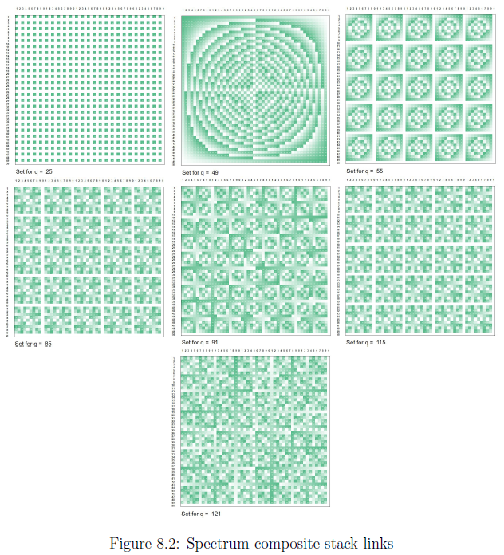

Working notebook — speculative, unfinished, not peer-reviewed.
That we arrived at the Archimedes spiral to model the volume of number might be labeled a “historic mathematical coincidence” , being Archimedes discovering the principle cause of buoyancy let us hope the hypothesis will float to the top. But this aside, the patterns of figure 7.22: Stack rhythm in the plane, are drawn on a Cartesian plane representing volume.
Table 8.1: Spectrum orthogonal diagonal full cycle, lays out a two dimensional array that extends to 50 rows and columns of $U_{arc}$. The $U_{arc}=7.2\text{°}$ ensures that 50 iterations suffice to complete a full cycle, $\angle U_{arc}\rightarrow\left[7.2\text{°,360°}\right]$.
The variable $q\in\mathbb{Q}$ determines the value for which $50^{2}=2500$ data points represent intersecting radii. The radius subdivides into units $\frac{1}{2.5^{2}}=\frac{8}{50}$. The proportion $50^{2}\propto8^{2}$ models the reduction in volume as function of surface area.
Table 8.1, represents just one out of an infinite number of gradients that represent a 8-fold increase in volume.
Table 8.1 — Spectrum: orthogonal/diagonal full cycle
\(U_{\text{arc}}=\angle 7.2^\circ\)
Spectrum — 50 periods for \(q\)
\(q\)
\(q\!\left(n\angle 7.2^\circ\right)\)
\(n\)
1
2
3
4
5
\(\dots,50\)
1
7.2°
1
7.2°
14.4°
21.6°
28.8°
36°
…
1
14.4°
2
14.4°
28.8°
43.2°
57.6°
72°
…
1
21.6°
3
21.6°
43.2°
64.8°
86.4°
108°
…
1
28.8°
4
28.8°
57.6°
86.4°
115.2°
144°
…
1
36°
5
36°
72°
108°
144°
180°
…
1
43.2°
6
43.2°
86.4°
129.6°
172.8°
216°
…
1
50.4°
7
50.4°
100.8°
151.2°
201.6°
252°
…
1
57.6°
8
57.6°
115.2°
172.8°
230.4°
288°
…
1
64.8°
9
64.8°
129.6°
194.4°
259.2°
324°
…
1
72°
10
72°
144°
216°
288°
0°
…
…
…
… , 50
…
…
…
…
…
… , 50
The proportion $2500\propto64$ can also be stated as the circumference of a circle with radius $\left|2\pi\right|$, the limit of mapping the zeta function to a circumference, see table 2.2: Zeta as a scale invariant proportion, $c=\frac{\left|2\pi\right|\times2\pi}{\looparrowright^{2}}=$$39\frac{1}{16}=$$\frac{2500}{64}$.
Interval, chaos and strange attractor
Projected as a $50\times50$ surface, enhanced with a gradient, the spectrum of the $50^{2}=2500$ possible intersections per unique value tells a story that culminates with a primorial connection.
F8.01 Spectrum core orthogonal diagonal
Figure 8.1: Spectrum core orthogonal diagonal, shows the spectrum for each of the 7 primes on the orthogonal diagonal, the starting value 1, and the first composite in the sequence, 25.
Where ever the color is absent the angle is 0, progressively the gradient lightens until $\angle n\thinspace mod\thinspace360=0$.
The set for q=1 is the baseline. The diagonal from lower right to upper left is the inverse of the orthogonal diagonal, the figure is symmetric over $180\text{°}$. The division in 4 quadrants is presents in all spectra, the least discernible in q=25.
There is an evolution visible in Cartesian patterns and patterns of spherical geometry. It seems that at the transition between q=23 and q=25 Descartes wins the fight.
This is the core set, A to D, eight transitions $\{1,5\},$$\{5,7\},$$ \{7,11\},$$\{11,13\},$$ \{13,17\},$$\{17,19\},$$ \{19,23\},$$\{23,25\}$, at transition $\frac{6}{9}\rightarrow\{13,17\}$ we find the clearest intermediate pattern between Cartesian and spherical features.
Spectrum chain links
In the total stack, see figure 7.17: Stacking the core, we find 7 values $\\{25,$$49,$$55,$$85,$$91,$$115,$$(121)\\}$, that link between the $\frac{6}{9} blocks$. Those chain links are displayed in figure 8.2: Spectrum composite stack links.
F8.02 Spectrum composite stack links
The spectrum for q=25 is familiar, $25+\left(n\times50\right)\rightarrow\angle180\text{°}$.
The next spectrum for q=49 looks similar to q=1 but is in fact rotated over $45\text{°}$, the diagonals are flipped and the whole configuration remains symmetrical over $180\text{°}$. It is as if we shifted perspective from above to underneath the plane.
The sets for $q=[I\thinspace55,N85,S115]$ are member of the sets $\left[5,15,35\right]+\left(n\times50\right)$. They project on $55\times7.2\text{°}=$$\angle36\text{°},$$ 85\times7.2\text{°}=$$\angle252\text{°},$$ 115\times7.2\text{°}=$$\angle108\text{°}$
The set for q=91 is from $7\times13=91$ or $41+\left(n\times50\right)$$\rightarrow$$\angle295.2\text{°}$, set 41 is in fact the midfield value for $\frac{6}{9}G$ in figure 7.17: Stacking the core.
In this we see that a loop occurs connecting two values $\{G41,P91\}$ both along the spiral, and orthogonal to the spiral, through the bulk.
The same goes for $\\{A5,I55\\},$$\\{B11,J61\\},$$\\{C17,K67\\},$$\\{D23,L73\\}$, etc. Each represents an interval of 50 (8), which is significant as a function of volume, causing specific (surface) coordinates to line up, see figure 5.6: Root 2 equilibrium, where chords merge forming a polar triangle, proportionally reducing $SA=1$ to $SA=\frac{1}{8}$ as function of volume.
Spectrum midfield composite
The sets for $q=\left[F35,K65,P95\right]$ are member of the sets $35+\left(n\times50\right)\rightarrow$$\angle252\text{°}, 15+\left(n\times50\right)\rightarrow$$\angle108\text{°}$ and $45+\left(n\times50\right)\rightarrow$$\angle324\text{°}$, and project accordingly.
F8.03 Spectrum composite stack midfield
The midfields as shown, do not merely connect along the spiral, but share radii with the 9th $\frac{6}{9}block$ further up the stack. The midfield clearly ends a sequence of eighth $\frac{6}{9}block$, but does so scale independent, as chain link in a continuous flow.
In principle the spiral represents a continuum, but comes prefixed with a rational set of coordinates enforced by units. Those units emerge from integer wavelength resonating in the repository of potential.
Mathematics follows nature in the sense that applying mathematics involves counting and manipulating units. Nature does not know math, it necessarily organizes by simple resonance patterns.
Figure 8.4: Midfield radial connections, shows radial connections between midfields and start of other $\frac{6}{9}blocks$. All of those radial segments are of length 50 (8) as they connect arcs of the Archimedes spiral.
Just like the QGF 2-gon chord, the radius of $50U_{arc}=8$ appears as a linear segment from a previous cycle. In an infinity of steps it completes a $720\text{°}$ cycle passing along the way all conceivable angles with the x-axis, until the radius stretched to x=16 at which point the doubling of radius indicates a completed cycle.
In the QGF representation, figure 7.2: Quadrature Geometric Framework, the chord at infinity stands orthogonal to the x-axis after two triangular, or primorial cycles of $45\text{°}$. Here $90\text{°}$ is proportional to $\frac{90\text{°}}{288\text{°}}=\frac{\pi}{10\looparrowright}$.
F8.04 Midfield radial connections
There are intermediate values that seem to be missing. These missing values represent nodes intersecting with diagonal $D_{1}\thinspace or\thinspace D_{2}$ and do not appear on the spiral, which of course represents diagonal $D_{0}$, see matrix [eq:block-stamp].
Note for instance $SP95\in[^{H45},P95,X145]$ and $SP113\in[C13,^{K63},S113]$. Resp. $3\times3\times5=45$ and $3\times3\times7=63$, both on diagonal $D_{1}$. Some other examples,
The connection with 40 units, see section 7.- The forties, re-emerges by $\frac{288}{U_{arc}}=40$ .
The model can be projected on $\frac{12.5}{40}=\frac{1.25}{4}\propto\frac{\pi}{10\looparrowright}$ which makes sense by a repetitive scale invariant projection of $pole\thinspace AD=180\text{°}$. A sub sequential repetition will result arithmetically in $\frac{\pi}{100}$, but in a physical implementation taken from a view of scale invariance, the observer will just measure two cycles $2\times180\text{°}=360\text{°}$.
In section 5.- Unity orthogonal to the sphere, the statement made was: “The question to ask is however, did you not notice your radius decreasing?”. This question implies that somehow the physical universe is in a state of continuous collapse, and thus a further statement keeps the energy flowing: “At which set of points does the energy of a blast project at any given point in time?”
At the edge of chaos, the primorial spectrum
Fractal recurrence in shape like the Mandelbrot set shows, does not cause motion, nor does it cause “time” or can it be equated to “energy”. It is however observable, measurable and can be modeled to produce beautiful images, preferably zoom-able on our computer screens.
The beauty disappears from the vantage of one particular point on some arbitrary line, nothing changes from the points perspective because non of its neighbors changes.
25, primorial equilibrium
We are not in such a dire clueless state, but we are like such points nonetheless. If all changes in relation with all other things, then at first glance no change occurs.
Taking a closer look at figure 7.19: Orthogonal fractal stack zeta, the set of diagonals $D_{0},D_{1},D_{2}$ provide some answers that connect the QGF intimately with the primorial function.
In figure 8.5: The primorial stack, each prime on the fractal core stack is amended with the quotient $\frac{P_{n}\#}{2\times3}=n$, and $n\thinspace mod\thinspace25=\frac{n}{5}$. The orthogonal diagonals subdivide the primorial product in two distinct factors, $D_{1}=2\times3=6$ and $D_{0}=5\times P_{n>5}\#...=n$$\rightarrow$$D_{0}\thinspace mod\thinspace5=0$.
F8.05 The primorial stack
The pole at $2.5^{2}$ and the subdivision in units of $\frac{1}{25}$ is the foundation under the QGF, in the stack prime 5 and composite 25 indicate a connection.
In the fractal core stack we find in $D_{0}$ indications of a winding path along a continuous curve that at each prime interval finds a cusp of $\frac{n}{5}$. The “path along a continuous curve” must be true, because the prime after 23 is 29 and yields $\frac{223092870\times29}{6}=\frac{6469693230}{6}=$$1078282205\rightarrow$$\left\lfloor \frac{1078282205}{25}\right\rfloor =$$n+\frac{1}{5}$.
In stead the curve passes the composite $5\times5=25$ along the way, and $\frac{223092870\times25}{6}=\frac{5577321750}{6}=$$929553625\rightarrow$$\left\lfloor \frac{929553625}{25}\right\rfloor =n+0$, indicating a full cycle just occurred.
This occurrence of some random integer composite in this sequence of primes can only be meaningful if the intermediate integer 24 has some profound reason *not to appear* on $D_{0}$ as the first next integer in line.
Aside from the fact that division by 25 then would not yield an integer result, “24” would know neither decide not to be there because of that fact, as would $2,3,$$4,6,$$8,9,$$10,\dots$ etc, no numerical consciousness present is the best guess. End of fun section.
It does have one reason that is not immediately obvious but can be derived from the location of prime 23. Composite 24 appears to belong sequentially to $D_{1}$, above 23, but in fact it claims position at $\frac{24}{6}=4$, the 6th position of block number 4, $\frac{6}{9}block\\,D$ on diagonal $D_{2}$, see fiigure 7.17: Stacking the core.
This condition of pattern was postulated in eq. [eq:block-stamp] and the primorial stack nails down the case for the fractal argument and might provide a pathway towards a closed formula for the number and location of primes $\prod\left(n\right)$.
The spectrum for the primorials
The primorial function is a product of primes, see table 3.1: Primorial root 2 approach, column $P_{n}\#=$$\{2,6,$$30,210,$$2310,\dots\}$, and those intermediate products have a spectrum, see figure 8.6: Primorial spectrum.
The sets for $q=[2,6]$ are those residing on diagonal $D_{1}$, all the following lay on diagonal $D_{0}$ and those show a nice consistency in discrete cycles.
Primorial spectrum
F8.06 Primorial spectrum
However, from $\left(2\times3\right)\times5=30$ on, all following $P_{n}\#$ products are a factor of 10, and because the prime factors are odd, only the 4 spectra will be generated that end in $q=\left[10,30,70,90\right]$.
This does not take into account though, that these spectra, with exception of the first two, are the products of two orthogonal diagonals.
Factors on the orthogonal diagonal
To obtain the spectra of the factors on the orthogonal diagonal we use a simple quotient. Each factor on that diagonal is $\frac{P_{n}\#}{D_{1}}=\frac{1}{6}P_{n}\#$ which is a familiar pattern indicating proportionality with $\zeta\left(2\right)$ by $P_{n}\#\propto\pi^{2}$ as a function of area, and follows the pattern of expansion in figure 6.5: M-brane mono surface zeta equilibrium.
By $\frac{P_{n}\#}{D_{1}}$ we find the spectra as shown in figure 8.7: Primorial Pn over 6 spectrum. Depicted are the spectra of the first eight (8) $\frac{P_{n}\#}{D_{1}}=\frac{1}{6}P_{n}\#$ and for making the order clear, including the spectrum of $\frac{P_{9\rightarrow23}\#\times25}{D_{1}}$, found at position E1 in figure 7.17: Stacking the core, the pole.
F8.07 Primorial Pn over 6 spectrum
Equilibrium at the bow shock
In “QGF in its natural configuration” there was mention of a “repository of potential” needed for explaining the dynamic behavior we were about to invoke in describing dynamical behavior of the physical implementation of the QGF.
At this point we only have a first principle that might account for the emergence of a quantum harmonic oscillator in a complete convex set when the abstraction of the QGF is superimposed on that set. How does one account for a repository of potential that, by observation and experimentation, has real tactile properties, spatial and temporal qualities.
It is not sufficient to ‘declare’ such a space into existence and explain its properties in terms of (analogies to) the QGF.
Wikipedia: Energy
In physics, energy is the quantitative property that must be transferred to an object in order to perform work on, or to heat, the object.
Energy is a conserved quantity; the law of conservation of energy states that energy can be converted in form, but not created or destroyed. The SI unit of energy is the joule, which is the energy transferred to an object by the work of moving it a distance of 1 meter against a force of 1 newton.
Spatial qualities are in fact non existent. The QGF models a dimensionless point that can neither expand nor collapse. But we observe both collapse and expansion at all conceivable scales, so how to account for spatial displacement if, as proposed, there are no such things as spatial qualities in the dimensionless point.
There is no mystery here, looking out into the universe is receiving signals from times long gone. The M-brane mono surface stretches out in time, is in a excited state and is in a entropic process similar to a dampened oscillator eventually coming to absolute rest.
Yes, “absolute” in clear defiance of the zero point energy attributed to Heisenberg's uncertainty principle. The notion of what energy exactly is has a clear explanation under this framework. It is the nature of circumstances that led to the observation that energy evidently is conserved and must be some eternal quantity that can not be destroyed. The repository of potential that we occupy is structured such that observation must led to that conclusion.
Then what is it? The Planck constant represents the staccato transfer of potential from unity chord to unity chord at some point of equilibrium as if part of a zone of constant pressure in a shock wave. A continuous gradient of collapsing surface area.
It is at the front of a shock wave that we envision the conditions that at first sight energy, and by extension information, is preserved.
The universe that we experience to be a spatial realm, expanding in time, is in fact an illusion of ever decreasing ‘surface area’. This surface area that we are part of close to atomic scale, has a cross section that stretches out from the Planck scale to the center of the great voids at universal scale.
This thin layer of activity is the M-brane mono surface coming to rest by shifting potential from layer to layer, the absolute surface area of the bow shock reduces with the radius, and us observers are integral part of that surface. It is space that apparently expands in relation to that for the observer static surface area, but in fact is just an illusion caused by re-configuring potential.
Spatial qualities are an illusion of shifting potential traversing the zero dimensional point. This equilibrium at the bow shock is our universe, a phase transition akin to a boiling kettle of water, a constant $100\text{°}C$ until there is nothing to evaporate left. At which point the bow shock ran its course, Heisenberg's uncertainty principle is no more and the potential called “time” reduced to nothing.
To interpret UN (the vibrational energy of N oscillators) not as a continuous, infinitely divisible quantity, but as a discrete quantity composed of an integral number of finite equal parts. Let us call each such part the energy element.
— Planck, On the Law of Distribution of Energy in the Normal Spectrum
The size of the mathematical universe
Our mathematical universe, given the 8 units on $D_{0}$, has the definite size of $A=8\times8=64$.
Not every angle, line or pattern, no matter how appealing, has to have structural meaning in the context of this thesis. Humans are pattern seeking animals by evolutionary necessity and find patterns even where non exist.
$D_{0}, D_{1}$ and $D_{2}$ represent areas by triangular projection. In the limit of the triangular projection we are left with a field of dimensionless points, a surface which only structure exists by the linear relation of the natural numbers, a line for short.
In this context we are justified to interpret the sum of primes as a linear feature, one that exists on two diagonals. As shown in figure 8.4: Midfield radial connections, there exist a configuration at which those two diagonals line up, and in essence represent the diagonal $\overline{BHD}$ in figure 7.8: Pair correlation proportional chord, at the point of equilibrium.
In figure 6.3: M-brane mono surface radii group III, line $\overline{AG}=\sqrt{2}$, the longest line in our universe is a diagonal of a square.
All this we find sufficient corroboration to postulate the size of our (mathematical) universe. But then again, “64” is not that poetic standing there alongside “42”, no cult status just yet. So let us see what 64 has to offer, maybe a slice of history is possible.
Taken the sum of primes as line $\overline{AG}=\sqrt{2}$, the we find $A_{universe}=\left(\frac{100}{\sqrt{2}}\right)^{2}=5000$, and this provides us with a universal unit of area $A_{1}=\frac{1}{64}5000=78.125$, this all is a bit nondescript until we unlock some beautiful relation and take some time to ponder on the following.